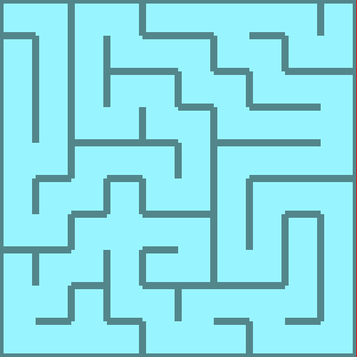
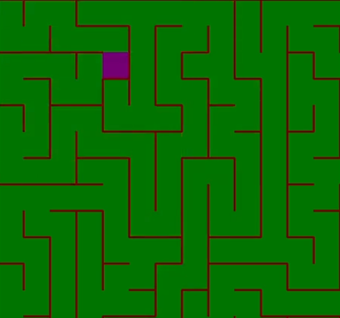

Draw Maze
Start with a rectangular maze. Render it on the screen. Your beginning examples should give you a good basis for writing the code.
A maze has edges that represent passages. Put a wall between adjacent vertices if there is not an edge between them.
 Representation
The vertices in a maze could be represented by numbers (as in the
make_grid function), or they could be represented by ordered
pairs. They both work fine.
If you choose numbers, you can convert a number into a (x,y) pair by
using quotient and remainder: the vertex n is found at grid
coordinates (n % columns, n // columns). In this case columns is
the number of columns.
Useful functions
Writing functions to abstract the ideas that you are working with is a good idea. For example, I used these functions:
neighbors(Graph, Vertex) -> [Vertex]: Given a vertex, return a list of its neighbors in the graph.connected(Graph, Vertex, Vertex) -> bool: Given two vertices, return true if there is an edge between them.
Testing
Here are adjacency list files you can use to test your maze drawing program. The 10x10 maze below is the first one shown on this page (above).
- 10x10 maze: text and python. Image of 10x10 maze.
- 20x20 maze: text and python defaultdict adjacency set. Image of 20x20 maze - note walls are quite thick in this image.
{kind=link}
{kind=link}